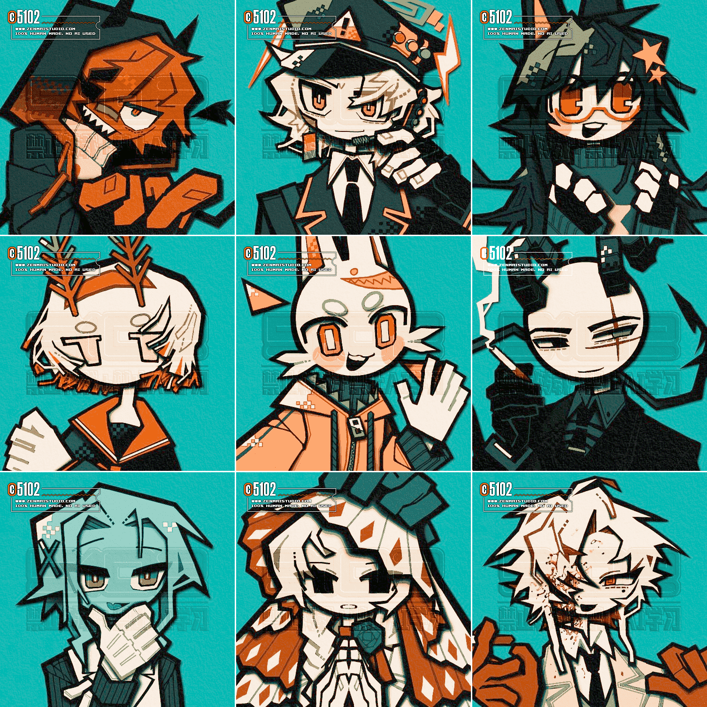

中国のみなさんありがとう（Request）

中国の絵描きさん向けに、棒人間＋丸顔人外限定でリクエストを受け付けていた時のもの。下書きと線画と色塗りは全て一つのレイヤーで済ませている。
絵の邪魔にならず、かつ万が一AIにぶち込まれたときに学習を邪魔してくれるようなウォーターマークの試行錯誤はまだ続いている。
今回はエンボス、デボス加工風にデカいロゴを敷いてみた。
色によって目立ったり逆に全然見えなかったりするのでこれ単体じゃ仕事はしなさそうだ…
2025/06/17
 中国のみなさんありがとう（Request）
中国のみなさんありがとう（Request）